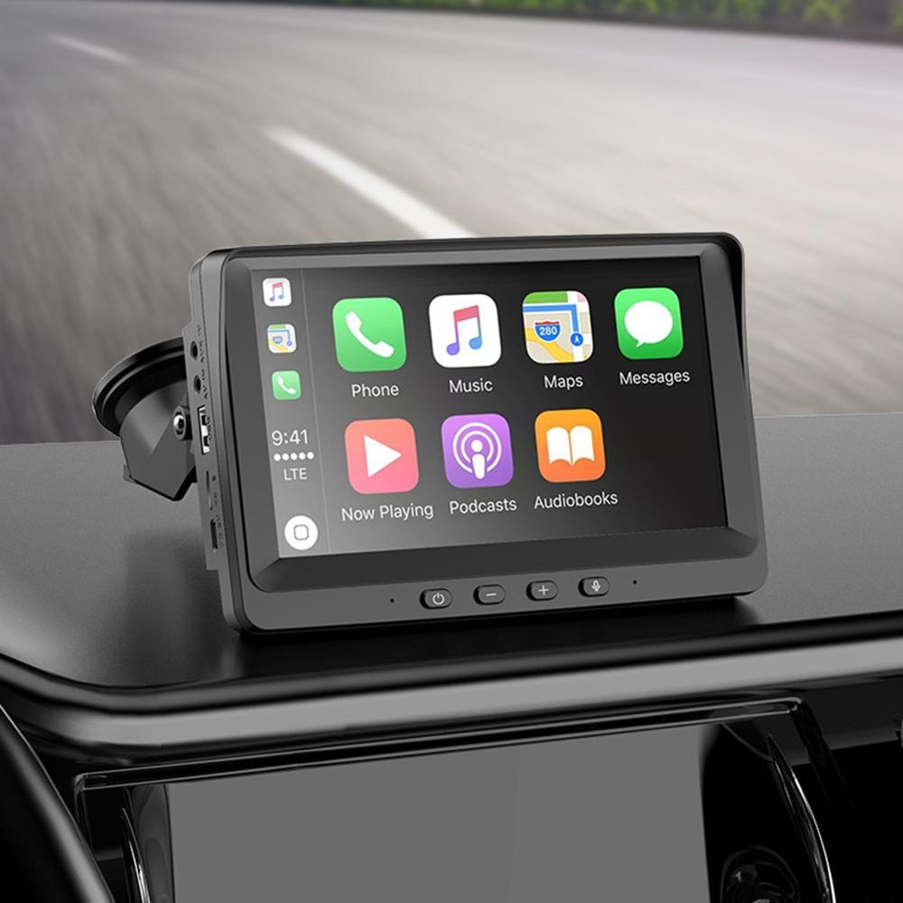

👆 Choisissez la marque — le modèle puis l'année s'activent automatiquement.

Le trim, l'année et l'autoradio d'origine changent la compatibilité. Envoyez-nous une photo — notre équipe identifie l'écran idéal pour vous.
S'intègre discrètement quand l'emplacement d'origine est réduit — idéal pour garder un look d'usine.
Le meilleur équilibre taille / lisibilité — le format que la plupart de nos clients choisissent.
Plus d'espace pour la navigation, la caméra et le multitâche — l'effet « cockpit moderne ».
La compatibilité dépend du tableau de bord, du cadre de montage et de l'autoradio d'origine de votre véhicule. Utilisez le configurateur ci-dessus pour vérifier.